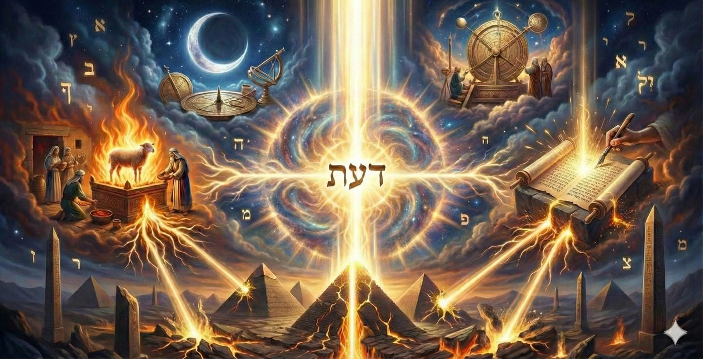
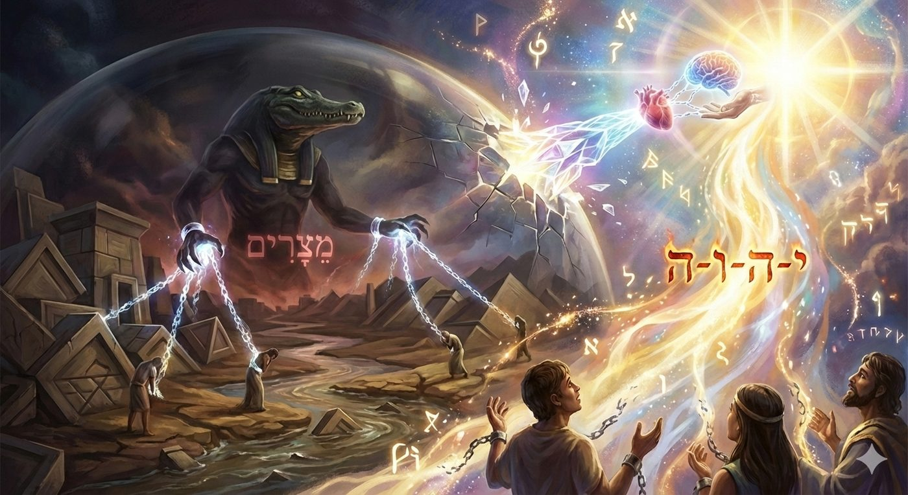
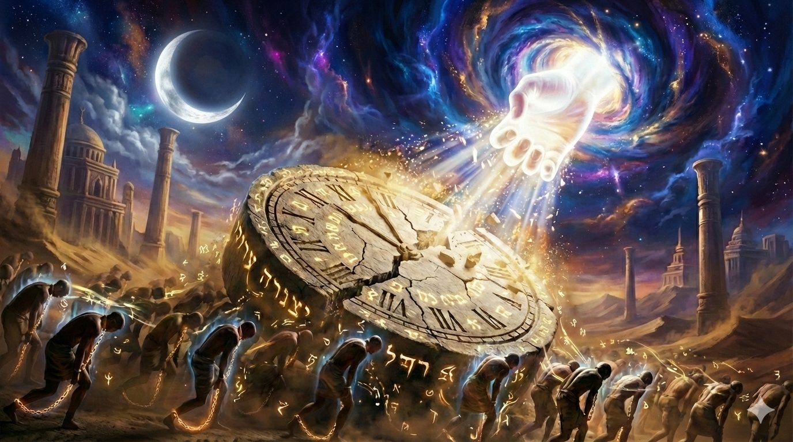
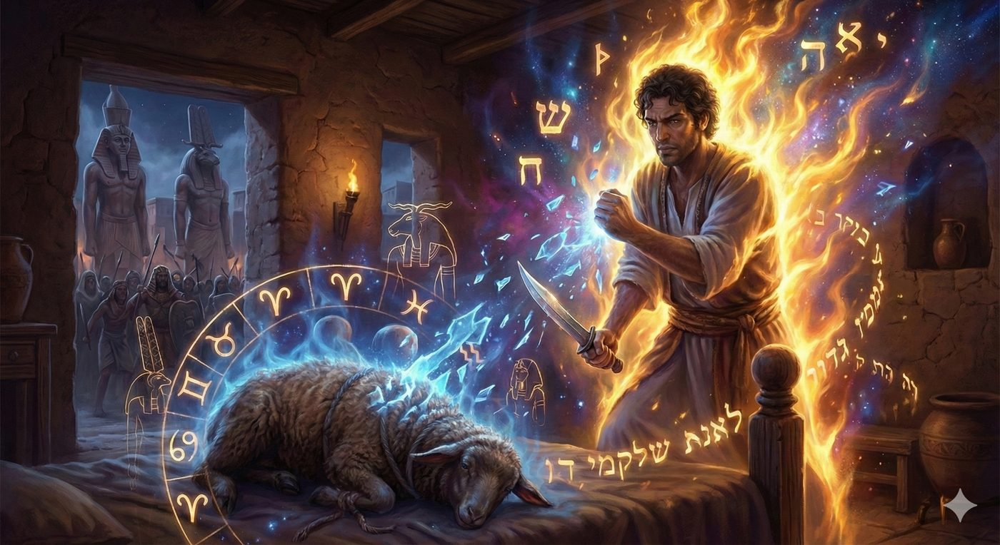
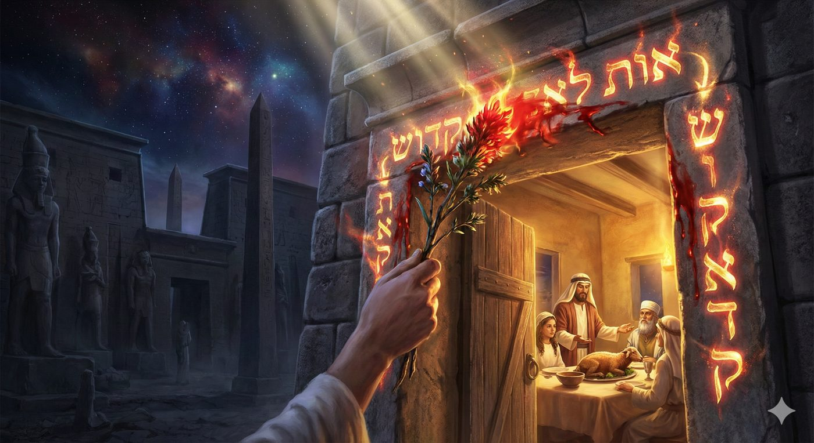
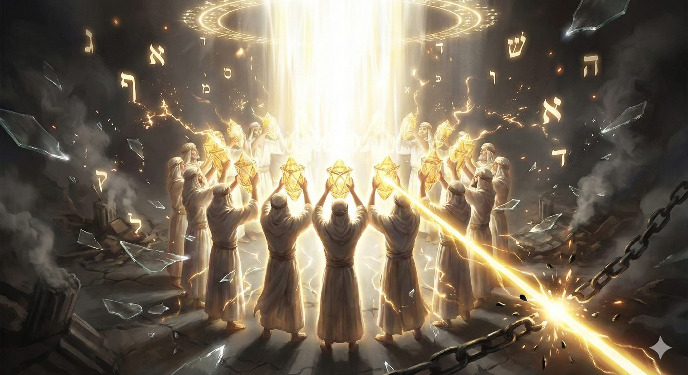
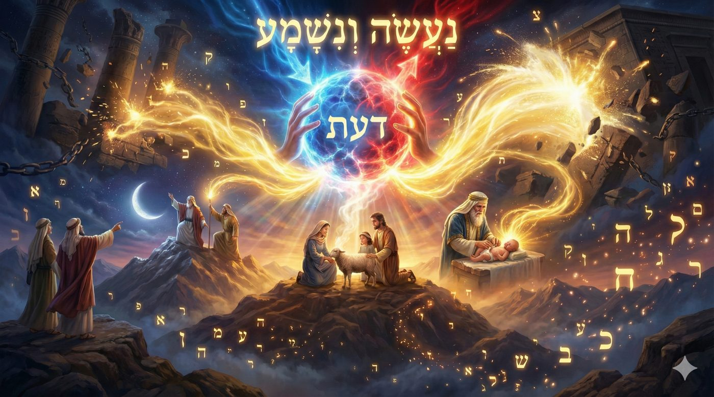
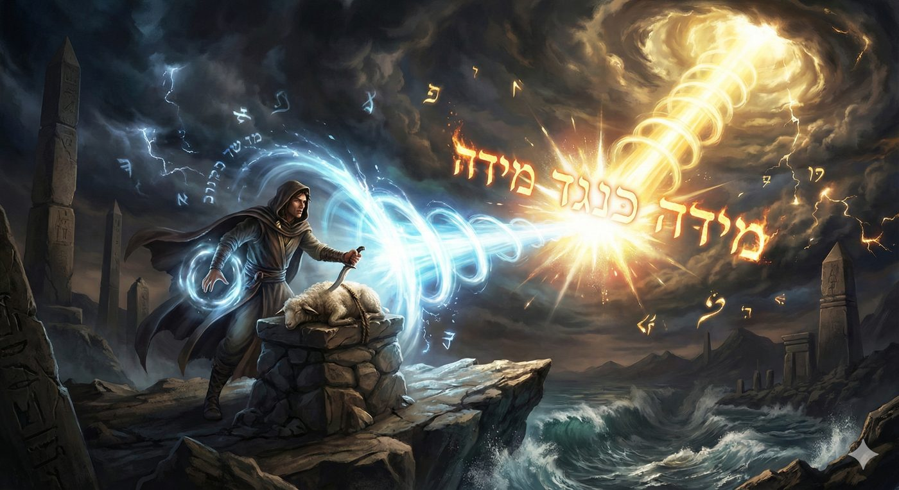

Bo 5786
Les Mitsvot libératrices
Cette étude s’inscrit dans le cadre d’un cycle d’enseignements fondé sur le livre de Chemot 5786. Il est conseillé au lecteur de le lire après avoir pris connaissance de la dialectique fondamentale entre l'immanence et la transcendance divine présenté dans Chemot 5786 (Lien de téléchargement) et de l’analyse paracha Va’era 5786 sur le fait que les dix plaies étaient une démonstration de cette dialectique dans (Lien de téléchargement).
L'objectif de ce chiour est d’analyser avec l’aide du Ciel et de nos Maîtres, l'introduction spécifique des commandements de Kiddouch HaHodech (la sanctification du mois par l’apparition de la lune), du Korban Pessa'h (l'agneau sacrifié à Pessah) et de la Mila (la circoncision) en préambule de la dixième plaie.
En s'appuyant sur les textes du Zohar, de nos sages (Sfat Emet, Bnei Yissaschar, Mei HaShiloach, Beit Yaakov et l’Admour Hazaken), nous verrons que ces mitsvot ne sont pas de simples rituels précurseurs, mais les outils spirituels permettant de construire le Daat (la Connaissance / l’Union) de l’unification des deux modes de conduite du Créateur, via le Memale Kol Almin (la Lumière qui remplit les mondes) et via le Sovev Kol Almin (la Lumière qui entoure les mondes), déclenchant ainsi, par une causalité spirituelle rigoureuse, la Géoula d’Égypte et permettant de passer de la contemplation passive à l'unification active et à la construction des réceptacles, des kelims de la délivrances.

Comme établi précédemment, l'Exil d'Égypte (Galout Mitzrayim) ne constituait pas uniquement un asservissement politique ou physique, mais représentait une crise profonde de la conscience divine, définie dans la mystique juive comme Galout HaDaat - l'Exil de la Connaissance. Dans cette obscurité conceptuelle, la perception de la Divinité était fracturée : d'un côté, une reconnaissance potentielle d'un Créateur lointain ou d'une force naturelle (Elokim), et de l'autre, l'occultation totale de la Providence active et miraculeuse (Havayah). La mission de Moché, telle que initiée dans Chemot et exploitée dans Va'era, était de révéler l'unité absolue entre ces deux modes de conduite divine : prouver que le D.ieu de la Nature (l'Immanence) est identique au D.ieu de l'Histoire (la Transcendance). Cependant, si Chemot et Va'era posent les fondements théologiques par la déconstruction de l'ordre naturel via les premières plaies, Bo marque un tournant décisif. La démonstration divine ne “suffit” plus, elle exige désormais une participation humaine active.
L’exil des Mitsvot
La Nature de l'Obstacle Égyptien : La Rupture du Lien
Il convient de redéfinir la nature de l'obstacle égyptien. L'Égypte (Mitzrayim) est étymologiquement liée à Meitsarim (limites, étroitesses). En effet, sur le plan métaphysique, l'Égypte représente l'hégémonie du déterminisme naturel. Pharaon, en déclarant « Qui est l'Éternel (Havayah) pour que j'écoute sa voix ? » (Exode 5:2), ne nie pas l'existence de divinités ou de forces créatrices (Elokim), mais il refuse l'idée d'une entité capable d'intervenir et de modifier les lois immuables de la nature car il dissimule la lumière infinie (Sovev Kol Almin) au profit exclusif de la lumière finie (Memale Kol Almin) qui s'investit dans les lois de la nature.

Le Rôle Central du Daat
Cette impossibilité d’unifier les deux systèmes de conduites du monde nous enseigne au nom du Zohar que l'Exil est un état où la connaissance de D., le Daat, est en exil.
Dans la terminologie mystique, le Daat, la « Connaissance-Union » est une faculté qui relie et soude les concepts intellectuels abstraits la Sagesse pure (Hohmah) et l'Intelligence discernante (Binah), aux attributs concrets de l'action (les Middots). C'est un pont entre la théorie et la réalité vécue et c'est dans ce sens que L'Exil est une coupure du Daat, c'est-à-dire une incapacité de faire le lien entre le spirituel et le matériel, entre D. qui transcende et D. qui irradie depuis le matériel.
Car, le peuple savait intellectuellement, par tradition patriarcale, que D.ieu existait, mais cette connaissance ne pouvait pas pénétrer leur réalité émotionnelle et physique. L’esclave hébreu devait ainsi se résigner face à l'oppression et l'assimilation progressive aux ténèbres spirituels environnant.
Alors pour que la Géoula devienne effective et durable, il fallait reconstruire ce pont en forçant l'Intellect à s'unir à la Volonté et à l'Action : faire descendre la conscience de la Transcendance (Havayah) dans les réceptacles de la réalité.
L'Insuffisance de la Passivité
Les plaies décrites dans Va'era ainsi que les deux premières de Bo (les sauterelles et l’obscurité) ont agi comme une « pédagogie de choc » destinée à briser les enveloppes spirituelles de l'Égypte. D.ieu a en effet symboliquement « rembobiné » la Création pour manifester Sa maîtrise absolue des forces de la nature.
Cependant, durant cette phase, Israël est resté un simple spectateur, sous le choc de cette démonstration hors norme. Or, si le spectateur acquiert la croyance (Emouna), la Connaissance (le Daat), l’appréhension de ce qui s’opère sous ses yeux, lui fait encore défaut.
C'est précisément là qu'est intervenu la logique de la Paracha Bo : avant de parachever la démonstration de Sa majesté lors de la dixième plaie, qui doit culminer avec la libération du peuple d'Israël, D.ieu a délibérément suspendu Son action directe pour Israël et a requis la co-action du peuple.
Il a dès lors initié l'introduction des outils de captation de Ses signaux au travers de trois de Ses commandements.
Ce diagnostic posé, il apparaît que la simple observation des miracles ne suffisait pas à libérer l'âme juive, il fallait un programme opérationnel d'actions concrètes.
Les Mitsvot unificatrices
Trois commandements (mitsvot) ont été ordonnés entre la neuvième et la dixième plaie, dont la réalisation apparaît comme une condition nécessaire à la Géoula. Il s'agit de Kiddouch Hahodesh la sanctification du mois, qui dépend de l'observation humaine de l'apparition de la nouvelle lune, du Korban Pessah le sacrifice et la consommation de l'agneau pascal (selon un mode opératoire spécifique à l’Égypte), et de la circoncision permettant de consommer le Korban Pessah. La question se pose de savoir pourquoi ces commandements ont été révélés à ce moment précis, avant le don de la Torah, et en quoi leur mise en pratique est un moteur de la Géoula.
La Mitsva de Kiddouch HaHodesh : Unifier le Temps
La première mitsva collective donnée à Israël est la sanctification du nouveau mois (Kiddouch HaHodech) : « Ce mois-ci sera pour vous le commencement des mois ; il sera le premier des mois de l'année » (Exode 12:2).
Le Sfat Emet (Rabbi Yehudah Aryeh Leib Alter de Ger) offre une analyse pénétrante sur la nature de l'esclavage. L'esclave est soumis au temps cyclique de la nature ; pour lui, demain est une répétition inévitable d'aujourd'hui. Il n'y a pas de Hithadshut (renouveau possible), sous ce prisme, la nature (Téva) est marquée par la répétition. En donnant la maîtrise du calendrier à Israël (« Ce mois est à vous »), D.ieu transfère l'autorité sur le temps de la Nature à l'Homme, et comme conséquence la fixation du calendrier, des fêtes, etc. et permet à l’homme de s’affranchir des cycles temporels.

Le terme Hodech (mois) partage la même racine que Hidouch (nouveauté). Le Sfat Emet explique que la capacité de se renouveler est l'essence même de la Géoula. Tant que l'homme pense que la réalité est figée (le fatalisme de la nature égyptien), il ne peut être libéré. En sanctifiant la lune, qui disparaît pour renaître à l’instar du peuple juif, Israël intègre la conscience que même dans l'obscurité la plus totale (l'absence de lune, l'exil), un renouveau radical est possible par la volonté divine.
Le Bnei Yissaschar (Rabbi Zvi Elimelech de Dinov) approfondit cette notion en opposant les deux « têtes » de l'année juive au travers de la Distinction entre Tichri et Nissan. D’un côté, Tichri (Création de la Nature) correspond à l'ordre naturel (Seder HaTéva) et au nom Elokim.
C'est le réveil d'en bas (Itaruta de-letata), marqué par le jugement (Din) et la crainte des fêtes de Roch Hachana et de Kippour, la Providence y est voilée par les lois naturelles. De l’autre, Nissan (Création des Miracles) contient deux Noun, symbolisant Nissei Nissim (Miracles des Miracles) correspond au mois de l'ordre surnaturel (Seder HaNissim) et au nom Havayah. C'est le réveil d'en haut (Itaruta de-le'ela), marqué par la bonté (Hessed) et l'intervention divine directe de pessah. En ordonnant que Nissan soit le « premier des mois », D.ieu demande à Israël de placer l'ordre miraculeux au-dessus de l'ordre naturel ,non pas pour nier la nature, mais pour subordonner le déterminisme (Tichri/Égypte) à la Géoula (Nissan/Israël).
Le Sfat Emet approfondi cette perspective en postulant qu’il ne faut pas fuir la nature pour le miracle, mais révéler que la nature elle-même est un miracle constant. La lune n'a pas de lumière propre, elle reflète le soleil, de même, Israël et la nature n'ont pas d'existence autonome et reflètent la lumière divine. En sanctifiant le renouvellement de la lune, Israël témoigne que le cycle « naturel » de la lune est en réalité une rénovation constante opérée par D.ieu. C'est ici que l'unité des conduites se réalise car la Téva (Nature) est appréhendée comme un Ness (Miracle) qui se répète si souvent qu'il en devient invisible.
Cette mitsva devient ainsi un outil de la pensée qui permet de voir le Miracle à l'intérieur de la Nature. Sans cette conscience du temps renouvelé, la sortie physique d'Égypte n'aurait été qu'un déplacement géographique, et non une libération existentielle.
La Mitsva du Korban Pessa'h : Unifier la Volonté et la Matière
Au cœur de l'Égypte, Hachem ordonne un acte de rupture, un commandement d'une audace inouïe, prendre l’agneau, l'incarnation terrestre de la divinité égyptienne (le signe du Bélier, Tleh, premier signe du zodiaque) et l'attacher aux montants de leurs lits pendant quatre jours (du 10 au 14 Nissan), avant de l'immoler : “[...] Qu'ils prennent pour eux, chacun un agneau pour la maison des pères, un agneau par famille.” (Chemot 12,3).
Le Maharal de Prague explique ainsi que sacrifier l'agneau, c'était tuer le déterminisme, un acte de ”déicide” culturel, une déclaration de guerre théologique contre l'idée que la nature est souveraine.
Le Mei HaShiloach (Rabbi Mordechai Yossef Leiner d'Izbica) introduit une dimension psychologique cruciale. Jusqu'à présent, Israël était passif. Or, la Géoula nécessite l'éveil de la Volonté (Ratzon). Si D.ieu avait simplement sorti le peuple, ils seraient restés des « objets » de la miséricorde divine, or pour devenir des « sujets », des partenaires de l'Alliance, ils devaient faire preuve de Mesirat Nefech (dévouement total/sacrifice de soi), on comprend aisément, que prendre l'idole des maîtres et la sacrifier au vu et au su de tous comportait un risque mortel. Il enseigne que c'est précisément ce risque qui a activé le « point de vérité » dans l'âme juive.
C'est l'acte de bravoure qui a transformé leur identité d'esclaves (soumis à la peur et à la nature) en serviteurs de D.ieu (soumis à une volonté transcendante).

Les détails halakhiques du Korban Pessa'h reflètent également l'unification des conduites divines :
Le korban devait être rôti au Feu. L'interdiction de le bouillir dans l'eau et l'obligation de le rôtir au feu sont significatives. L'eau symbolise le Hessed (Bonté) qui dissout et mélange ses ingrédients en forçant le compromis des goûts. Le feu symbolise la Gevourah (Rigueur/Jugement) et la distinction. Rôtir l'agneau au feu "scelle" la viande. Le feu oblige l'élément à se définir par lui-même, sans apport extérieur, en expulsant ses propres jus. C'est l'acte fondateur d'une identité juive autonome. Pour qu'Israël devienne une nation sainte, il devait cesser d'être soluble dans la culture égyptienne. La rigueur du feu est ici la condition sine qua non de la liberté : il faut savoir dire "non" et se séparer pour exister.
Le Korban devait être consommé en entier (Tête, jarrets, intérieurs). Le Shem MiShmuel (fils du Avnei Nezer, école de Sochatchov) explique que rôtir l'animal entier symbolise l'unité totale. Il ne s'agit pas de servir D.ieu uniquement avec l'intellect (tête) ou l'action (jarrets), mais avec la totalité de l'être, y compris les instincts les plus bas (les organes intérieurs).
Le sacrifice devait etre consommé avec du Matza et du Maro, soit du pain azyme (humilité/transcendance) et des herbes amères (souffrance/immanence de l'exil) qui permettent d'ingérer simultanément l'expérience de l'esclavage et celle de la liberté, unifiant ainsi l'histoire dans une conscience unique (Daat) que « tout vient de D.ieu ». (Voir pour aller plus loin sur le “sandwich” de Hillel Hazaken)
Le Korban Pessah devait être consommé en Groupe en “Chvoura”. Le Beit Yaakov (Rabbi Yaakov Leiner, fils du Mei HaShiloach) souligne l'aspect communautaire du Korban Pessa'h (en groupes familiaux ou non). L'unité des conduites divines (D.ieu est Un) se reflètant ainsi dans l'unité du peuple (Israël est Un), car le Daat ne peut résider dans un individu isolé, mais nécessite le « rassemblement des étincelles » à travers de l'unité collective autour du sacrifice.
La Mitsva des Sangs (Dam Mila et Dam Pessa'h) : Unifier l'Intérieur et l'Extérieur
Rachi (sur Exode 12:6), le Midrash, et le prophète Yehezkel enseignent que les Bnei Israël ont dû réaffirmer leur alliance avec D. en réalisant la Brit Mila qui a été abandonnée en Égypte durant l’esclavage, et qui est une condition halkhahique nécessaire à la consommation du Korban Pessa'h (Chemot 12:8).
Le prophète Yehezkel décrit Israël en Égypte comme un nouveau-né abandonné, « gisant dans son sang ». D.ieu passe et dit : « Dans tes sangs, vis ! » (Yehezkel 16:6).
Le Midrash Pirkei de-Rabbi Eliezer et le Targum Yonatan identifient ces « sangs » (au pluriel) comme le sang de la circoncision (Dam Mila) et le sang du sacrifice pascal (Dam Pessa'h). Pourquoi le sang ? Dans la pensée de l'Admour Hazaken (Torah Or), le sang (Dam) est le siège de l'âme animale (Nefesh HaBahamit) et de la vitalité chaleureuse du corps. Dam est lié étymologiquement à Adam (Homme) et Adom (Rouge). C'est la passion, l'enthousiasme, la vie biologique brute, en Égypte, cette chaleur vitale était investie dans l'idolâtrie et les plaisirs mondains. Pour être libéré, il fallait réorienter cette vitalité fondamentale vers la Sainteté.
La circoncision représente la sanctification de l'identité intérieure au travers d’un acte intime et physique : le Retrait de l'Orlah (du prépuce) qui est représentative de la Klipah (de l’écorce) qui obstrue la sensibilité spirituelle, et représente le blocage du cœur et l'instinct charnel débridé. Cet acte permet de révéler le Daat intérieure, la connaissance de D.ieu intimiste.
En effet, le terme Daat est intimement lié à l'union charnelle. Il apparaît en premier lieu lorsqu’ “Adam connut Hava” , nous enseignant que le véritable amour est la connaissance de l’autre et de même une véritable « Connaissance » de D.ieu est impossible si le canal de la vie et de la génération est obstrué par l'égoïsme de la luxure. En réalisant la Mila, les Hébreux ont inscrit la transcendance dans leur chair même, transformant leur désir biologique en alliance divine. Ils ont assujetti l'Immanence corporelle à la Loi Transcendante.
Alors que la circoncision (Mila) sanctifie l'individu, l'observance des lois du Korban Pessa'h est un acte de sanctification de l'environnement. Comme D. l'a instruit à Moché : « Ils prendront du sang et le mettront sur les deux poteaux et sur le linteau, de la porte des maisons où ils le mangeront ». Ce geste servait de marqueur distinctif, permettant à D.ieu de différencier le peuple juif des Égyptiens et de protéger leurs foyers lors de la dixième plaie. Le verset « Le sang sera pour vous un signe » (Lahem le-ot) indique que ce geste servait de signe pour D.ieu et pour l'Homme.
Selon le Sfat Emet, ce signe n'était pas destiné à l'Ange de la Mort (qui n'avait pas besoin de cela pour distinguer les Hébreux), mais aux Bnei Israël eux-mêmes. En marquant ainsi leurs portes, ils déclarent leur espace comme un territoire relevant de l'Éternel, la transcendance au sein de l'immanence.
Selon le Midrash Rabba (19:5), la mitsva spécifique d’enduire les poteaux et le linteau des maisons juives a été réalisé en combinant les deux sangs précités (Dam Mila et Dam Pessah) et fut accomplie dans la nuit du 14 au 15 Nissan, établie grâce au premier Kiddouch HaHodech de l’histoire qui a permis d’enclencher le calendrier humain, démontrant s’il le fallait, que ces mitsvot visaient à catalyser la Géoula par l’unification des modes de conduites du divin.
Cette unification par l'action a une conséquence métaphysique immédiate : la création d'une structure capable de contenir la révélation divine imminente.

Les Mitsvot : Kelims de la Géoula
La Mécanique de l'Unification Divine
Comme nous l’avons déjà expliqué, la Lumière Infinie de D. (Or Ein Sof) se manifeste de deux manières : Celle qui est Memale Kol Almin (Qui remplit tous les mondes), il s’agit de la lumière immanente, qui s'adapte à la capacité de chaque créature, et qui est la source de la vie naturelle et des lois physiques (Téva) ; en Égypte, cette lumière était voilée, captive des « écorces » de Pharaon. Et la lumière qui est Sovev Kol Almin (Qui entoure tous les mondes), il s’agit de la lumière transcendante, infinie, qui ne peut être saisie par la logique ou la nature, la source des miracles (Nes) et de la Géoula.
Les Récipients (Kelims) pour la Lumière
La Géoula est une révélation intense de la lumière. Si cette lumière se révélait sans que les bénéficiaires aient préparé des « réceptacles » pour la recevoir, elle serait destructrice ou éphémère (comme une lumière éblouissante qui aveugle) et entraînerait une chivra, une brisure des réceptacles dédiés à la recevoir. Si cette lumière se révélait sans que les bénéficiaires n’aient disposé leurs réceptacles dans une a’hdout, une unité, un collectif, un peuple, cette lumière ne pouvait non plus se déverser. Car comme nous l’avons vu dans les chiourim précédents, la brisure originelle des réceptacles qui a entraîné le déversement des étincelles de lumières dans le monde (et en Égypte de manière massive) était consécutive d’un alignement des Kelim les uns en dessous des autres, forçant les Kelim à devoir supporter les lumières inférieures.

Il semble ainsi que les mitsvot de Mila et Pessa'h aient servi à construire de premiers réceptacles et à les disposer en collectif afin de capter la lumière qui brisera les chaînes de la Géoula. La Mila a affiné le corps (le réceptacle physique) pour qu'il puisse supporter la sainteté sans se briser et le Pessa'h a affiné la conscience collective pour qu'elle puisse percevoir le miracle sans tomber dans l'anarchie, et au bon moment défini par le calendrier dédié via le Kiddouch Hahodesh.
D.ieu a ainsi ordonné aux Bnei Israël de procéder à l’unification de Ses conduites par des mitsvot pratiques et matérielles et selon le principe de « Na'assé Ve-Nichma » - Nous ferons et (alors) nous comprendrons - en fabriquant les Kelim (récipients) avant de recevoir Ses lumières.

De l'Objet esclave à l'Être libéré
Il faut désormais reboucler sur les chiourims précédents, et “conclure” sur l’idée fondamentale de ce chiour. L’exil du Daat est celui de la connaissance des modes opératoires du divins (de Ses noms). D.ieu dans sa miséricorde a brisé les lois de la nature pour dévoiler son Daat, mais les hommes n’étaient pas prêts et le peuple juif comme les nations ont alors subis cette connaissance sous une forme de Chvira, de brisure, par 10 plaies. Il fallait donc charger le peuple Hébreu d’une connaissance spécifique pour démarrer leur Géoula, l’exode de l'Égypte et c’est là qu'est le sens des mitsvot qui ont été donnés en égypte (et qui seront donnés par la suite à Matan Torah). Les mitsvot sont une connaissance fondamentale de la Volonté divine et donc de la réunification de Ses modes opératoires, les appliquer c’est affirmer et alimenter son expérimentation de la Volonté divine, et la trouver dans chaque détail de la nature (l'immanence) et de l’histoire (transcendance).
Car le Daat ne s'obtient pas par la pensée, mais par l'expérience d’un engagement total. L'Admour Hazaken (et bien d’autres penseurs hassidiques) enseignent que l'âme possède des niveaux inconscients qui ne s'éveillent que par la Mesirout Nefech (le sacrifice de soi). Tant qu'Israël réfléchissait à la libération, ils restaient esclaves, au moment où ils ont agi, en prenant le risque de tuer l’agneau, l’idole égyptienne et de se circoncire, s'affaiblissant physiquement, 3 jours avant un voyage, ils ont activé l'essence de leur âme. C'est cette action « contre-nature » et « contre-raison » qui a créé une résonance avec la lumière surnaturelle » de D.ieu. Mesure pour mesure (Mida Kéneged Mida), parce qu'ils ont transcendé leur nature (peur, douleur, logique), D.ieu a transcendé Sa nature (lois physiques) pour les libérer. L'unité a été créée par l'action humaine, déclenchant ainsi la Géoula.

L'essence de la délivrance d'Égypte (la Géoula) n'est ainsi pas seulement un changement de statut politique, mais une transformation métaphysique profonde, centrée sur la réactivation et l'élévation du Daat (Connaissance-Union). Les commandements donnés avant la sortie ne sont pas de simples tests d'obéissance, ils étaient les instruments opératoires par lesquels le peuple pouvait passer du statut d'objet passif de l'histoire à celui de sujet actif de sa propre Géoula.
La véritable révolution théologique de la Géoula est ainsi le renversement de la causalité. La sagesse du monde et de l'Égypte prône : « Je comprendrai (Daat), alors je ferai (Ma'asseh) ». L'Égypte s'est enfoncée dans l'incrédulité et le scepticisme parce que Pharaon exigeait de voir pour croire (qui est Havaya ? dit-il), mais la logique de la Géoula, révélée à Israël, est celle du Na'assé (Nous ferons), qui génère le Daat (véNichma et nous comprendrons).
Les trois mitsvot introduites par Moché ont ainsi fonctionné comme une triade rectificatrice : Kiddouch Hahodesh (Le Temps) a révélé que le calendrier n'est pas une prison cyclique naturelle, mais une spirale de renouveau constant dirigée par D.ieu en partenariat avec l'Homme. Le Korban Pessa'h (L'Espace/Monde) a révélé que les forces de la Nature (l'agneau symbole de l’astre égyptien) n'ont pas de pouvoir autonome et doivent être sublimées vers la Source. Et enfin, la circoncision, la Mila (L'Âme/Corps) a révélé que même l’intimité, la vitalité biologique est sacrée et liée à l'infini.
En mélangeant ces sangs pour les badigeonner, au bon moment calendaire, sur les linteaux de leurs portes, les Bnei Israël ont prouvé que le D.ieu qui ordonne le calendrier et le sacrifice des animaux et des corps (Transcendance) est le même que Celui qui anime la lune, les animaux, et la biologie (Immanence) et ils ont ainsi intégrés la connaissance, le Daat de l’unité divine au travers de “l’unité de Ses conduites”.
L’application de la Volonté divine a permis de réaliser cette unification et de démarrer l’intégration du Daat, permettant de passer de la « Croyance » passive d'un peuple opprimé à la « Connaissance » active d'un peuple de futurs prêtres, devenant ainsi l'architecte de sa propre délivrance.
Dieu a “seulement” ratifié la liberté que le peuple avait déjà choisie et établie, une liberté qui était le fruit d’un éveil d’en bas “Itarouta de-tata” , déclencheur d'un éveil d’en haut “Itarouta de-Léila”. C'est là que réside la profonde synergie de la Guéoula (la Délivrance) : un acte symbolique accompli par l'homme, une Mitsva, qui crée un lien, une Tzavta1, et qui ouvre les portes de l'infini transcendance divine dans l’immanence.
Grâce à ce sang badigeonné aux portes, Israël s’est relié à D.ieu, renouant le fil qui les unissait à l'éternité, et c’est par ce fil de Daat retissé que la Lumière supérieure a pu les extraire des ténèbres.
Nos Sages (Chir Hachirim Rabba 5, 3) ont interprété ainsi le verset :
« Ouvre-moi, ma bien-aimée » - « Ouvrez-Moi une porte de Téchouva comme le chas d’une aiguille et Je vous ouvrirai une porte dans laquelle des charrettes et des carrosses pourront entrer ».
Yehi Ratson, Que soit la volonté du Ciel,
que nous soyons comptés parmi ceux qui, par l'accomplissement concret des mitsvot, parviennent à unifier la Lumière qui remplit les mondes et la Lumière qui les entoure.
Chabat Chalom !
 Pour aller plus loin - le koreh de Hillel
Pour aller plus loin - le koreh de Hillel
Hillel l’ancien (un sage de l’époque du Second Temple), selon le Talmud (Traité Pessa'him 115a), avait pour coutume de combiner la Matza (le pain de l'affliction et de la hâte de la sortie d'Égypte) et le Maror (les herbes amères, symboles de l'amertume de l'esclavage) lorsqu'il observait le seder de pessah, en souvenir de l'exigence biblique de manger l'agneau rôti avec des Matsot et du Maror (Nombres 9:11).
En consommant les deux ensemble, il soulignait que même dans l'amertume de l'esclavage et la hâte de la Géoula, il y a une unité et un dessein divin global. L'acte d'envelopper ou d'intégrer les deux éléments représente l'idée que les expériences apparemment contrastées de la vie - la joie (Matza) et la souffrance (Maror) - sont intrinsèquement liées et font partie d'un plan unifié.
Bien que l'essence du Korekh soit l'unité des éléments, différentes coutumes et interprétations ésotériques ont émergé concernant l'ordre et la manière de les assembler :
Matza entourant Maror (Unité cachée) : Selon cette coutume, c'est la Matza (symbole d'une réalité plus matérielle ou de l'action divine révélée) qui entoure le Maror (l'amertume, la souffrance, ou parfois une dimension plus ésotérique et interne). Cette disposition peut être interprétée comme le fait que l'Unité divine (souvent symbolisée par la Matza ou la notion de liberté et de Géoula) englobe et enveloppe même l'amertume et les épreuves de ce monde. Une autre lecture y voit l'idée que l'unité divine est « cachée » ou voilée par les couches de la matière et de l'expérience terrestre (le Maror), qui est au centre et semble dominer l'expérience immédiate.
Maror entouré de Matza (Matière intégrée) : L'interprétation inversée, où le Maror (la matière, l'amertume) est placé à l'intérieur de la Matza (l'Unité divine englobante ou la spiritualité). Cette perspective suggère que l'amertume et les aspects matériels de l'existence doivent être intégrés et soumis à une vision d'unité divine et de sainteté. L'existence matérielle et ses épreuves ne sont pas rejetées, mais sont contenues, définies et sanctifiées par le cadre de la Géoula et de la foi (la Matza).
Ces nuances dans la composition du Korekh reflètent des approches théologiques et mystiques distinctes sur la relation entre le monde matériel (Olam HaZé) et la dimension spirituelle (Olam HaBah), et sur la manière dont l'homme doit percevoir les difficultés et les bénédictions au sein du même plan divin. Le sandwich de Hillel demeure un puissant rappel de la complexité et de la cohésion de l'expérience de la Géoula.
 Synthèse
Synthèse
L'Exil d'Égypte (Galout Mitzrayim) est défini non seulement comme un asservissement physique, mais comme une crise profonde de la conscience divine, appelée Galout HaDaat (l'Exil de la Connaissance). Dans cette obscurité, la perception de D.ieu est fracturée entre : L'Immanence (Elokim) : Le D.ieu de la Nature, voilé dans ses lois rigides (que Pharaon acceptait) et La Transcendance (Havayah) : Le D.ieu de l'Histoire et du miracle, extérieur au monde (que Pharaon refusait).
La mission de la Géoula est de révéler l'unité absolue entre ces deux modes de conduite divine, rétablissant le Daat (Connaissance-Union), le pont entre l'intellect et la réalité vécue.
Les sept premières plaies (décrites dans Va'era) ont servi de « pédagogie de choc » pour briser l'ordre égyptien, prouvant la maîtrise de D.ieu sur la Nature. Cependant, Israël est resté un simple témoin passif, acquérant la croyance (Emounah) mais non la connaissance active (Daat).
C'est pourquoi la Paracha Bo marque un pivot pragmatique majeur : avant la dixième plaie, D.ieu suspend Son action et requiert la co-action du peuple au travers de trois mitsvot, servant de Kelim (réceptacles) pour contenir la révélation de la délivrance :
Kiddouch HaHodech (Unité du Temps) : La sanctification du nouveau mois transfert l'autorité du calendrier de la Nature à l'Homme. Elle révèle que le Téva (Nature) n'est pas un cycle fataliste, mais un Nes (Miracle) qui se répète et se renouvelle constamment.
Korban Pessa'h (Unité de la Volonté) : Sacrifier l'agneau, idole égyptienne, est un « déicide » culturel et un acte de Mesirat Nefech (sacrifice de soi) face au risque de mort. Cet acte de bravoure transforme l'esclave passif en un sujet libre et actif, assujettissant la volonté animale à la Volonté Transcendante.
Dam Mila et Dam Pessa'h (Unité de l'Intérieur et de l'Extérieur) : Le sang de la circoncision (Dam Mila - purification du corps/âme) et le sang de l'agneau sur le linteau (Dam Pessa'h - sanctification de l'environnement) sont mélangés. Cet acte unifie la vie intérieure et la vie extérieure, la Transcendance et l'Immanence, assurant une protection pendant la plaie.
La véritable révolution de la Géoula réside dans le renversement de la causalité : La sagesse du monde prône : « Je comprendrai (Daat), alors je ferai (Ma'asseh). » La logique d'Israël est : « Nous ferons (Na'assé), qui génère le Daat (véNichma). »
En accomplissant ces mitsvot contre leur logique et leur instinct (en prenant le risque), les Bnei Israël ont activé l'essence de leur âme, créant une résonance avec la lumière surnaturelle de D.ieu. La liberté fut ainsi la conséquence métaphysique immédiate d'un choix humain, qui déclencha l'éveil d'En-Haut car la Géoula est l'acquisition active de la conscience de l'unité divine par l’application de la Volonté divine : les mitsvot.
Thème central : De la contemplation passive à l'unification active. Comment l'action humaine construit les réceptacles de la Délivrance. Introduction : Le Diagnostic de l'Exil
La Thérapeutique Divine : Trois Mitsvot, Trois UnificationsPour guérir cette rupture, Moché transmet trois commandements qui agissent comme des leviers métaphysiques sur la réalité. Kiddouch HaHodech (La Sanctification du Temps)
Le Korban Pessa'h (La Sanctification de la Volonté et de l'Espace)
Dam Mila et Dam Pessa'h (La Sanctification de l'Être)
La Mécanique de la Délivrance (Synthèse mystique)
Conclusion : L'Ouverture
|
📚 Sources Tanakh (Torah, Prophètes, Hagiographes)
Targoum et Midrash
Talmud Bavli
Classiques et Commentateurs (Rishonim/Acharonim)
Mystique et HassidoutZohar HaKadosh :
Admour Hazaken (Baal HaTanya) :
Sfat Emet (Rabbi Yehudah Aryeh Leib Alter de Ger) :
Bnei Yissaschar (Rabbi Zvi Elimelech de Dinov) :
Mei HaShiloach (Rabbi Mordechai Yossef Leiner d'Izbica) :
Shem MiShmuel (Rabbi Shmuel de Sochatchov) :
Beit Yaakov (Rabbi Yaakov Leiner) :
|
|---|
 Plan du Chiour
Plan du ChiourAinsi que le précise le précise de nombreux rabbanims dont le Kedoushat Lévi (chemot vayera 34) : « “Mitsva” est un terme de connexion, ainsi qu’il est notoire que ce mot tient de “Tzavta ’Hadah” (être uni ensemble). Quiconque réalise un commandement unit ainsi son âme au Créateur béni soit-Il… »↩︎